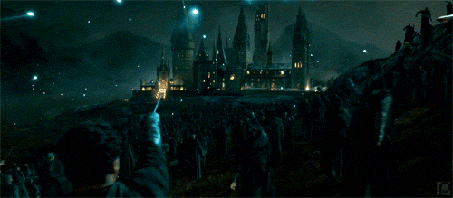
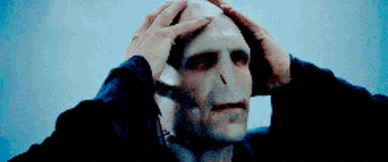
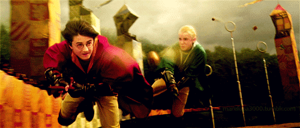
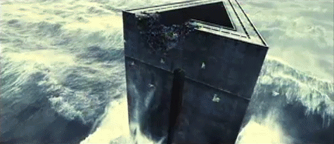

Hogwarts rafforza la sicurezza: studenti sorvegliati dagli Auror
Silente ha confermato la presenza di maghi del Ministero all'interno del castello dopo i recenti avvenimenti.
Edizione Speciale • Londra • 1997
“Il giornale magico più letto del Regno Unito”

Fonti anonime interne al Ministero sostengono che il Signore Oscuro sia realmente tornato. Cornelius Caramell continua tuttavia a negare ogni coinvolgimento, invitando la popolazione a mantenere la calma.
Nel frattempo Hogwarts è stata posta sotto sorveglianza straordinaria e numerosi Auror sono stati dispiegati in tutto il Regno Unito.

Silente ha confermato la presenza di maghi del Ministero all'interno del castello dopo i recenti avvenimenti.

La squadra ha ottenuto la settima vittoria consecutiva grazie a una prestazione incredibile del Cercatore.

I Dissennatori sembrano aver perso completamente il controllo della prigione magica.